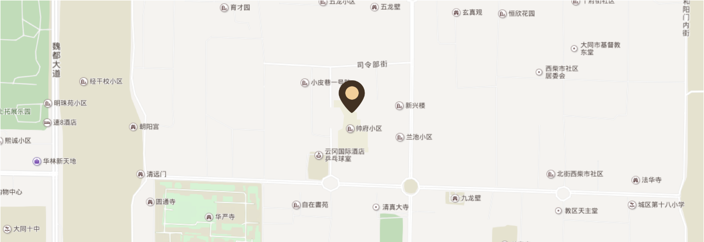

马辰古典音乐讲师，钢琴演奏家，作曲家，音乐制作人，毕业于中央音乐学院，曾参与策划并参演国内多场大型演出项目，并担任多个影视剧项目的配乐，曾举办大型音乐全国巡讲项目《如何欣赏交响乐》，曾为北京多家企业制定《音乐治疗心理减压课程》，并举办讲座《古典音乐经典作品赏析》，《音乐水墨画》，《经典电影音乐创作》，《爵士乐欣赏与创作》等课程，4人钢琴演奏专辑《spirit journey心灵之旅》。走遍了全国30多个省市，累计举办了200多场音乐会及讲座。
马辰，库客音乐古典音乐讲师，钢琴演奏家，作曲家，音乐制作人，毕业于中央音乐学院，曾参与策划并参演国内多场大型演出项目，并担任多个影视剧项目的配乐，曾举办大型音乐全国巡讲项目《如何欣赏交响乐》，曾为北京多家企业制定《音乐治疗心理减压课程》，并举办讲座《古典音乐经典作品赏析》，《音乐水墨画》，《经典电影音乐创作》，《爵士乐欣赏与创作》等课程，并录制了个人钢琴演奏专辑《spirit journey心灵之旅》。走遍了全国30多个省市，累计举办了200多场音乐会及讲座。
琴演奏家，作曲家，音乐制作人，毕业于中央音乐学院，曾参与策划并参演国内多场大型演出项目，并担任多个影视剧项目的配乐，曾举办大型音乐全国巡讲项目《如何欣赏交响乐》，曾为北京多家企业制定《音乐治疗心理减压课程》，并举办讲座《古典音乐经典作品赏析》，《音乐水墨画》，《经典电影音乐创作》，《爵士乐欣赏与创作》等课程，并录制了个人钢琴演奏专辑《spirit journey心灵之旅》。走遍了全国30多个省市，累计举办了200多场音乐会及讲座。
马辰，库客音乐古典音乐讲师，钢琴演奏家，作曲家，音乐制作人，毕业于中央音乐学院，曾参与策划并参演国内多场大型演出项目，并担任多个影视剧项目的配乐，曾举办大型音乐全国巡讲项目《如何欣赏交响乐》，曾为北京多家企业制定《音乐治疗心理减压课程》，并举办讲座《古典音乐经典作品赏析》，《音乐水墨画》，《经典电影音乐创作》，《爵士乐欣赏与创作》等课程，并录制了4ourney心灵之旅》。走遍了全国30多个省市，累计举办了200多场音乐会及讲座。
马辰，库，钢琴演奏家，作曲家，音乐制作人，毕业于中央音乐学院，曾参与策划并参演国内多场大型演出项目，并担任多个影视剧项目的配乐，曾举办大型音乐全国巡讲项目《如何欣赏交响乐》，曾为北京多家企业制定《音乐治疗心理减压课程》，并举办讲座《古典音乐经典作品赏析》，《音乐水墨画》，《经典电影音乐创作》，《爵士乐欣赏与创作》等课程，并录制了个人钢琴演奏专辑《spirit journey心灵之旅》。走遍了全国30多个省市，累计举办了200多场音乐会及讲座。
马辰，库客音乐古典音乐讲师，钢琴演奏家，作曲家，音乐制作人，毕业于中央音乐学院，曾参与策划并参演国内多场大型演出项目，并担任多个影视剧项目的配乐，曾举办大型音乐全国巡讲项目《如何欣赏交响乐》，曾为北京多家企业制定《音乐治疗心理减压课程》，并举办讲座《古典音乐经典作品赏析》，《音乐水墨画》，《经典电影音乐创作》，《爵士乐欣赏与创作》等课程，并录制了个人钢琴演奏专辑《spi4灵之旅》。走遍了全国30多个省市，累计举办了200多场音乐会及讲座。
马辰，库客音乐古典音奏家，作曲家，音乐制作人，毕业于中央音乐学院，曾参与策划并参演国内多场大型演出项目，并担任多个影视剧项目的配乐，曾举办大型音乐全国巡讲项目《如何欣赏交响乐》，曾为北京多家企业制定《音乐治疗心理减压课程》，并举办讲座《古典音乐经典作品赏析》，《音乐水墨画》，《经典电影音乐创作》，《爵士乐欣赏与创作》等课程，并录4演奏专辑《spirit journey心灵之旅》。走遍了全国30多个省市，累计举办了200多场音乐会及讲座。
